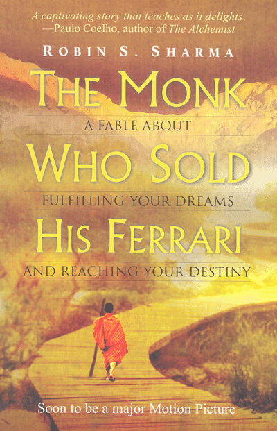

Summary:
A renowned inspirational fiction, The Monk Who Sold His Ferrari is a revealing story that offers the readers a simple yet profound way to live life. The plot of this story revolves around Julian Mantle, a lawyer who has made his fortune and name in the profession. A sudden heart-attack creates havoc in the successful lawyer?s life. Jolted by the sudden onset of the illness, his practice comes to a standstill. He ponders over material success being worth it all, renounces all of it and leaves for India. A visit to India about a spiritual awakening that opens up new vistas and Julian begins to view life in a different perspective. He decides to live his life once again but in a way that is much more fulfilling and meaningful than before. In the book, the reader goes through a spiritual journey and into a very old culture that has gathered much wisdom over the millennia. The book advocates about how to live happily, think deep and rightly, value time and relationships, be more disciplined, follow the heart?s call and live every moment of the life. Written in simple words, the book has turned out to be a bestseller and is more than just an endearing story. Through storytelling, Robin Sharma showcases the miracles and wonders of living a fulfilling life. In the process, the book introduces readers to enlightening yet simple principles that vouch to make life better, happier and more meaningful. A bestselling novel, what readers all over the globe appreciate about this book is its deft amalgam of the philosophies from both western and eastern worlds. The book has been followed by important personalities around the world. About the Author Robin Sharma, the bestselling author of 'The Monk Who Sold His Ferrari', first published in 1999, is an International Leadership Professional Guru who is credited with having written 15 books on leadership. He has been guiding people to live a better life, by drawing inspiration from his own life experiences. The Leader Who Had No Title, The Leader Who Had No Title, The Greatness Guide and The Saint and The Saint are among his best books. He heads the Sharma Leadership International Inc, a firm that trains people in leadership. A former litigation lawyer, Robin holds a law degree from Dalhousie Law School, Canada. This book along with The Greatness Guide has been among the world?s bestsellers and has been translated in as many as 70 languages all over the world.